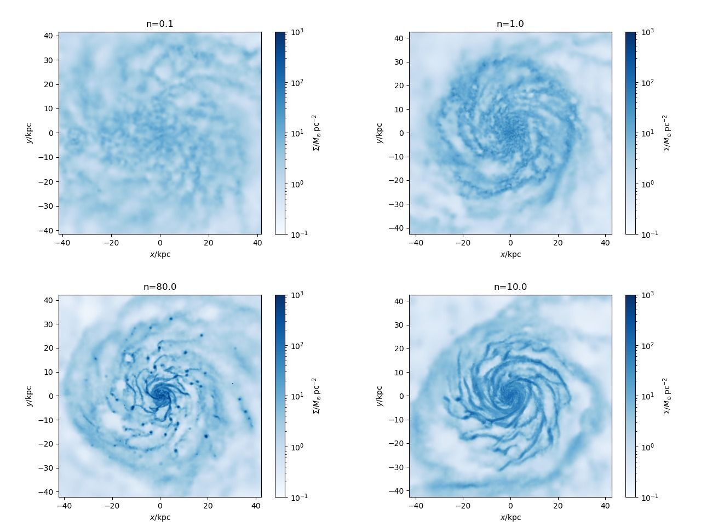
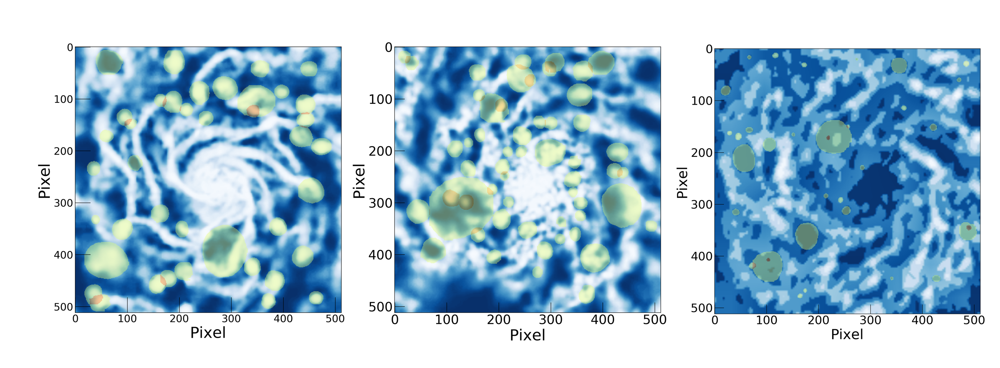
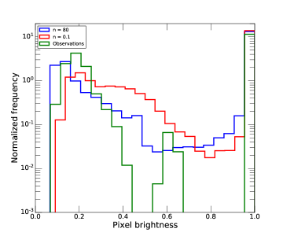
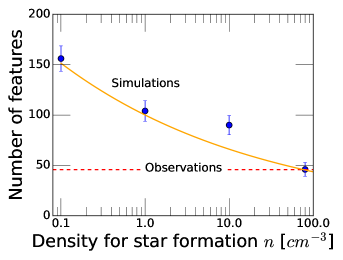
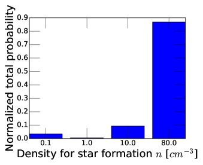

استخدام الذكاء الاصطناعي وصور المجرات الحقيقية لتقييد المعلمات في محاكاة تشكل المجرات
الملخص
ما تزال محاكاة تشكل المجرات الكونية محدودة بدقتها المكانية والكتلية، ولا تستطيع نمذجة بعض العمليات من المبادئ الأولى، مثل تشكل النجوم، وهي عمليات أساسية في دفع تطور المجرات. ونتيجة لذلك، لا تزال تعتمد على مجموعة من «المعلمات الفعالة» التي تحاول تمثيل المقاييس والعمليات الفيزيائية التي لا يمكن حلها مباشرة في المحاكاة. نبيّن في هذه الدراسة أن من الممكن استخدام تقنيات تعلم الآلة المطبقة على صور حقيقية ومحاكاة للمجرات للتمييز بين قيم مختلفة لهذه المعلمات، وذلك باستعمال كامل المحتوى المعلوماتي للصورة الفلكية بدلا من اختزاله إلى مجموعة محدودة من القيم مثل الحجم أو الكتل النجمية/الغازية. في هذا العمل نطبق طريقتنا على محاكاة NIHAO وعلى أرصاد THINGS و VLA-ANGST لخرائط HI في المجرات القريبة لاختبار قدرة قيم مختلفة لعتبة كثافة تشكل النجوم على إعادة إنتاج خرائط HI المرصودة. نبيّن أن الأرصاد تشير إلى الحاجة إلى قيمة عالية مقدارها cm-3 (مع أن القيمة العددية تعتمد على النموذج)، وهو ما تترتب عليه نتائج مهمة لتوزيع المادة المظلمة في المجرات. وتظهر دراستنا أنه باستخدام طرائق مبتكرة يمكن الإفادة الكاملة من المحتوى المعلوماتي لصور المجرات ومقارنة المحاكاة بالأرصاد بطريقة قابلة للتفسير، لا معلمية، وكمية.
keywords:
علم الكونيات: النظرية – المادة المظلمة – المجرات: التكوّن – المجرات: الحركيات والديناميكيات – المناهج: العددية1 مقدمة
في السنوات الأخيرة أصبحت المحاكاة العددية الهيدروديناميكية واحدة من أقوى الأدوات لدراسة تشكل المجرات وتطورها عبر الزمن الكوني. وباتت المحاكاة الحديثة قادرة الآن على إعادة إنتاج طيف واسع من خصائص المجرات، بما في ذلك (على سبيل المثال لا الحصر) وفرتها، وكتلها النجمية، وسرعات دورانها، وألوانها، وعلاقات التحجيم، وغير ذلك (مثلا Vogelsberger et al., 2014; Stinson et al., 2013; Dubois et al., 2016; Schaye et al., 2015a; Wang et al., 2015; Tremmel et al., 2017; Dutton et al., 2017; Pillepich et al., 2018; Nelson et al., 2018; Buck, 2020).
وبفضل ازدياد القدرة الحاسوبية وكثير من الجهود التي بذلتها مجموعات مختلفة لتحسين نمذجة العمليات الفيزيائية الداخلة في تشكل المجرات، أنتجت عدة مجموعات تشغيلات فائقة الدقة لأجسام منفردة ولبيئتنا المحلية بعشرات الملايين من العناصر لوصف تطور المادة المظلمة والغاز والنجوم (مثلا Aumer et al., 2013; Marinacci et al., 2014; Hopkins et al., 2014; Grand et al., 2017; Buck et al., 2019b; Gutcke et al., 2021; Arora et al., 2021; Agertz et al., 2021).
وعلى الرغم من هذه التطورات، فإن الطبيعة متعددة المقاييس لتشكل المجرات، الممتدة من السحب الجزيئية إلى البيئة واسعة النطاق (الكونية)، ما تزال تحول دون القدرة على حل بعض الظواهر الأساسية التي تشكل المجرات في الكتلة والفضاء، ولذلك تحتاج المحاكاة إلى اللجوء إلى «وصف فعال» لبعض هذه العمليات. (مثلا Somerville and Davé, 2015; Vogelsberger et al., 2020, والمراجع الواردة فيه).
أحد الأمثلة الممكنة على «الوصف الفعال» هو تمثيل تشكل النجوم بمعلمات في المحاكاة الكونية. فالنموذج الكامل لتشكل النجوم يتطلب، من حيث المبدأ، حل المقياس المكاني النموذجي للسحب الجزيئية (فرسخ فلكي واحد وما دونه) وفي الوقت نفسه تتبع تدفق الغاز المجري من المقاييس الكونية البالغة عدة Mpc، وبذلك يربط نحو ست رتب مقدار في المقاييس المكانية. ولتجاوز المشكلات المرتبطة بهذا المجال الديناميكي الصعب، تميل المحاكاة العددية الكونية إلى اعتماد مجموعة من الوصفات، تتضمن معلمات وعتبات، لوصف الفيزياء دون حد الدقة (مثلا Springel and Hernquist, 2003). فعلى سبيل المثال، يُنظَّم تشكل النجوم عادة بعتبة كثافة (حرارة)، تكون جسيمات الغاز فوقها (دونها) مؤهلة لتكوين النجوم. وعند اختيار القيمة الفعلية لهذه العتبة الكثافية ()، تتبع المجموعات المختلفة مقاربات مختلفة. تميل بعض المجموعات إلى استخدام قيم لـ حول 0.1-1 عند قياسها بعدد الجسيمات لكل cm3 (مثلا Schaye et al., 2015a; Vogelsberger et al., 2014; Nelson et al., 2018)، بينما تفضل مجموعات أخرى استخدام قيم أعلى لـ ، عادة في المجال (Governato et al., 2010b; Oñorbe et al., 2015; Brook and Di Cintio, 2015; Wang et al., 2015). وتجدر الملاحظة أن الكثافة المتوقعة في أنوية السحب الجزيئية العملاقة ينبغي أن تتجاوز جسيم لكل سنتيمتر مكعب (McKee and Ostriker, 2007)، إلا أن هذه القيم لا تزال بعيدة المنال حتى بالنسبة إلى أعلى محاكاة للمجرات الحلزونية دقة أُنتجت حتى الآن (انظر Vogelsberger et al., 2020, لمراجعة حديثة). ومع أن كلا النهجين ( المنخفض والمرتفع) ينجحان بدرجة متقاربة في إعادة إنتاج الخصائص المرئية للمجرة، فإنهما يميلان إلى الاختلاف بقوة في تنبؤاتهما بخصائصها المظلمة. فعلى سبيل المثال، توجد فروق جوهرية في الاستجابة المتوقعة لتوزيع المادة المظلمة لتشكل المجرات في محاكاة المنخفضة والعالية (Benítez-Llambay et al., 2017; Dutton et al., 2017)، وهي فروق قد تدفعنا أو لا تدفعنا إلى إعادة النظر في نماذجنا الحالية لطبيعة المادة المظلمة، كما نوقش في Bullock and Boylan-Kolchin (2017).
إن النهج العام لضبط هذه المعلمات الحرة (إلى حد ما) في النمذجة العددية هو اختبار الناتج النهائي للمحاكاة، أي المجرات عادة، في مقابل الأرصاد. وفي هذا الصدد، توفر علاقات التحجيم بين المجرات، مثل علاقة تالي-فيشر (Tully and Fisher, 1977)، وعلاقة الحجم بالكتلة (Courteau et al., 2007)، أو علاقة الكتلة بالمعدنية (Tremonti et al., 2004; Gallazzi et al., 2005; Kirby et al., 2015)، أداة تشخيصية جيدة جدا لاختيار المعلمات «الجيدة» من المعلمات «غير الجيدة كثيرا»؛ بمعنى أن المحاكاة القادرة وحدها على إعادة إنتاج عدة علاقات تحجيم تُعد موثوقة.
ومع أن لهذا النهج فوائده، فإنه يفرض اختزال الكم الكبير من المعلومات الموجودة في المحاكاة إلى مجموعة من أعداد قليلة تُقارَن بالأعداد القليلة نفسها المستخلصة أيضا من أرصاد معقدة. وبهذا النهج يُهمل قدر كبير من المعلومات الرصدية لأنه لا يمكن بسهولة صوغه في عدد واحد. ومن ثم يجدر التساؤل عما إذا كان من الممكن مقارنة خرائط المجرات المحاكاة والحقيقية (مثل الخرائط النجمية أو الغازية) مباشرة، بغرض استخدام المحتوى المعلوماتي الكامل لكل من المحاكاة والأرصاد للمساعدة في تحديد أي المعلمات أنسب لتمثيل الفيزياء العاملة في تشكل المجرات.
ومع ظهور التعلم العميق، طوّر مجال تعلم الآلة (ML) مهام التعرف على الصور وتصنيفها وتجزئتها (مثلا Ronneberger et al., 2015)، مما أفاد كثيرا مهمة معالجة الصور. وقد طُبقت تقنيات ML هذه في عدد كبير من الاستخدامات الفلكية المتعلقة بخصائص المجرات (مثلا Dieleman et al., 2015; Beck et al., 2018; Hocking et al., 2018; Dawson et al., 2020; Buck and Wolf, 2021).
كما استُخدمت طرائق التعلم غير الخاضع للإشراف لتعريف البنى الحركية للمجرات (Doménech-Moral et al., 2012; Obreja et al., 2018, 2019; Buck et al., 2018, 2019a) أو لتحديد النجوم الملتقطة من أقمار MW المتعطلة في بيانات مسح GALAH (Buder et al., 2021).
ومن الأعمال ذات الصلة بسياق ورقتنا العمل الحديث جدا لـ Zanisi et al. (2021)، الذي يقارن السمات المورفولوجية صغيرة المقياس للمجرات المحاكاة من مشروع Illustris-TNG (Pillepich et al., 2018) بمجموعة بيانات SDSS. ويجد أولئك المؤلفون عدم اتفاق قوي بين مورفولوجيات المحاكاة والمجرات المرصودة من حيث السمات المورفولوجية للمجرات.
نهدف في هذه الورقة إلى استخدام تعلم الآلة والذكاء الاصطناعي لمقارنة خرائط الغاز (HI) من مسح THINGS (Walter et al., 2008) ومسح VLA-ANGST (Ott et al., 2012) كميا مع خرائط مماثلة أُنشئت من حزمة محاكاة NIHAO (Wang et al., 2015)، وذلك لتقييد القيمة العددية لعتبة الكثافة الخاصة بتشكل النجوم، ، المستخدمة في المحاكاة.
2 المحاكاة
تعتمد حزمة NIHAO (الاستقصاء العددي لمئة جرم فيزيائي فلكي) من المحاكاة الهيدروديناميكية الكونية (Wang et al., 2015; Blank et al., 2019) على كود gasoline2 (Wadsley et al., 2017)، وتتضمن تبريد كومبتون، والتأين الضوئي والتسخين بفعل الخلفية فوق البنفسجية تبعا لـ Haardt and Madau (2012)، وتبريد المعادن، والإغناء الكيميائي، وتشكل النجوم، والتغذية الراجعة من المستعرات العظمى والنجوم الضخمة (ما يسمى التغذية الراجعة النجمية المبكرة، Stinson et al., 2013). وتُضبط المعلمات الكونية وفق نتائج أقمار Planck (Ade and others, 2014). وتتغير الدقة الكتلية والمكانية عبر العينة كلها، من كتلة جسيم مادة مظلمة قدرها (وتليين قوة قدره pc) للمجرات القزمة إلى و kpc للمجرات الأعلى كتلة (انظر Wang et al., 2015; Blank et al., 2019, لمزيد من التفاصيل).
ثبت أن محاكاة NIHAO ناجحة جدا في إعادة إنتاج عدة علاقات تحجيم مرصودة للمجرات، مثل علاقة الكتلة النجمية بكتلة الهالة (Wang et al., 2015)، وعلاقة كتلة غاز القرص بحجم القرص (Macciò et al., 2016)، وعلاقة تالي-فيشر (Dutton et al., 2017)، وتنوع منحنيات دوران المجرات (Santos-Santos et al., 2018) فضلا عن علاقة الكتلة بالمعدنية (Buck et al., 2021).
2.1 تشكل النجوم
يُنفذ تشكل النجوم كما وصفه Stinson et al. (2006, 2013). تتكون النجوم من غاز بارد (K) وكثيف ()، حيث تُقاس عتبة الكثافة بعدد الجسيمات لكل سنتيمتر مكعب.
في محاكاة NIHAO المرجعية نعتمد [cm-3] . هنا، 50 هو عدد جسيمات الغاز المستخدمة في نواة التنعيم SPH، و هي الكتلة الابتدائية لجسيمات الغاز، و هو تليين قوة الجاذبية لجسيم الغاز.
نعيد تشغيل كل محاكاة عند عتبتي تشكل نجوم إضافيتين: و، من دون تغيير أي معلمة أخرى، ثم عند عتبة كثافة أعلى باستخدام نصف التليين، بغرض الحفاظ على التحجيم نفسه بين و كما في تشغيلات NIHAO الأصلية، ولضمان أن الكثافات الغازية الناتجة يمكن حلها عدديا على نحو ملائم.
2.2 حساب كسر HI وبناء الخرائط
لحساب كسر الهيدروجين المحايد HI، اتبعنا Macciò et al. (2016) واستخدمنا تقريب التدريع الذاتي الموصوف في Rahmati et al. (2013)، استنادا إلى محاكاة انتقال إشعاعي كاملة عرضها Pawlik and Schaye (2011). الأثر الكلي لهذا النهج في التدريع الذاتي هو زيادة كمية HI (بالنسبة إلى الحساب المرجعي في gasoline2)، مما يجعل المحاكاة أكثر توافقا مع الأرصاد (Rahmati et al., 2013; Gutcke et al., 2016). تملك خرائط HI دقة قدرها 500x500 بكسل، وحجما فيزيائيا يساوي 0.4 أضعاف نصف القطر الفيروسي للمجرة. يعرض الشكل 1 تجميعة لخرائط HI للمجرة نفسها الشبيهة من حيث الكتلة بمجرة MW (منظورا إليها وجها لوجه)، لكنها محاكاة بقيم مختلفة لـ .

3 البيانات الرصدية
استُخرجت خرائط HI المرصودة من مسح HI للمجرات القريبة (THINGS) (Walter et al., 2008) ومن مسح VLA-ANGST لمجرات خزانة مسح المجرات القريبة بكاميرا ACS (Ott et al., 2012). وفي هذا العمل استخدمنا ما مجموعه 16 خريطة HI لمجرات تمتد من القزمية غير المنتظمة إلى الحلزونيات المنتظمة البنية.
تتراوح أحجام البكسلات في خرائط THINGS بين وpc، اعتمادا على المسافة. وهذا قابل للمقارنة مع إخراج المحاكاة لصورة ذات 500x500 بكسل تغطي 0.4 من نصف القطر الفيروسي البالغ نحو 200 kpc. رصد THINGS عادة قرص HI كاملا حتى كثافات مقدارها بضع مرات cm-2، وهو ما يغطي عادة مساحة مشابهة لـ 40 في المئة من نصف القطر الفيروسي. استخدمنا خرائط الشدة المتكاملة ذات الترجيح الطبيعي (العزم 0) من THINGS و VLA-ANGST.
في هذه الدراسة الاستطلاعية نستخدم فقط عينة فرعية من 16 من أصل 62 خريطة مرصودة، لأن بقية المجرات إما صغيرة جدا (أو بعيدة جدا) أو تُرى من الحافة أكثر مما يلائم أغراضنا. وتُعطى قائمة مجرات THINGS و VLA-ANGST المستخدمة في هذا العمل في الملحق A.
4 نماذج تعلم الآلة
استُخدمت في هذا العمل شبكتان عصبونيتان التفافيتان عميقتان مختلفتان ومستقلتان تماما. الأولى كاشف للفوهات القمرية دُرّب على صور سطح القمر، والثانية مصنّف صور دُرّب على صور من العالم الطبيعي وصور مجرات محاكاة. ولهذين النموذجين المختلفين بنيتان مختلفتان ودُرّبا على مجموعتي بيانات مختلفتين، وبذلك يقدمان رؤيتين مستقلتين تماما للمشكلة.
4.1 كاشف البنى الدائرية
النموذج الأول الذي نستخدمه هو كاشف الفوهات المعروض في Ali-Dib et al. (2020)، وهو نموذج شبكة عصبونية التفافية عميقة، يستند إلى إطار التجزئة الدلالية (He et al., 2017).
بما أن الفوهات في صورة ما ليست إلا تباينات سطوع شبه دائرية داخل خلفية محلية أكثر تجانسا، نجد أن هذا النموذج المدرّب قادر على كشف «قمم» عالية الكثافة متعددة المقاييس و«ثقوب» تكاد تخلو من الغاز في المجرات. ولتحسين الأداء العام للنموذج وقابليته للانتقال بين المجالات، نعيد تدريبه على صورة 105 قمرية ومريخية وعطاردية تتوافر لها فهارس فوهات. ونستخدم كذلك تعزيز الصور؛ فإضافة إلى الدورانات والانعكاسات القياسية، نضيف ضجيجا غاوسيا عشوائيا، ونضبط مخطط سطوع البكسلات بعامل عشوائي، ونضيف زاوية ميل كبيرة إلى الصور على نحو مماثل للمجرات شبه المرئية من الحافة. ويتبين أن هذا مهم جدا في تحسين أداء النموذج، إذ إن معظم الصور البصرية مثلا لها زوايا إضاءة محددة مترابطة قد يستخدمها النموذج سمات، مما يعيق قابليته للانتقال. لهذا النموذج نستخدم النموذج نفسه كما في Ali-Dib et al. (2020): تنفيذ Matterport لـ MaskRCNN مع العمود الفقري ResNet101. دُرّب النموذج باستخدام الانحدار المتدرج العشوائي كما هو موصوف في Ali-Dib et al. (2020) وباستخدام المعلمات نفسها (LEARNINGRATE = ، 80 حقبة، )، وRPNANCHORSCALES = (4، 8، 16، 32، 64)، وRPNNMSTHRESHOLD = 0.7) لكن على مجموعة بيانات أكثر تعقيدا بكثير. وتشمل صورا من DEM العالمي LRO/LOLA للقمر والفسيفساء البصرية العالمية LRO/LROC WAC، ومن الفسيفساء العالمية و DEM العالمي MESSENGER/MDIS لعطارد، وأخيرا DEM MGS/MOLA للمريخ وفسيفساء Viking العالمية V2. وقد عززنا فهارس الفوهات القمرية التي استخدمها Ali-Dib et al. (2020) بفهرس Robbins (2019). واستخدمنا فهرس Robbins and Hynek (2012) للمريخ، وأخيرا فهرس Herrick et al. (2018) لعطارد.
لا يُدرَّب النموذج قط على أي صور متعلقة بالمجرات. ومن ثم فإن الاستدلال على هذه الصور هو صورة خالصة من التعلم بالنقل11 1 ملاحظة: لا يلزم إعادة تدريب أوزان الشبكة على صور المجرات، كما أن ذلك لن يعمل بسهولة لأن MaskRCNN يحتاج إلى بيانات مجرات موسومة. وهذا يعني أن إعادة التدريب على صور المجرات تتطلب من MaskRCNN سلسلة من الأقنعة الهدفية. وفي كل الأحوال، عند إعادة التدريب، سيحتاج المرء إلى القلق بشأن فرط الملاءمة، وهو ليس مشكلة في حالة الاستخدام المستكشفة هنا..
4.2 مصنف الصور
النموذج الثاني هو مصنف صور دُرّب باستخدام خرائط HI مجرية محاكاة مع كثافة الغاز بوصفها هدفا فئويا. النموذج الذي استخدمناه هو VGG16 (Simonyan and Zisserman, 2014)، ونهيئه بأوزان imagenet المدربة مسبقا. نستبدل رأس النموذج بطبقات متصلة بالكامل: Dense(128, ReLu)-Dropout-Dense(128, ReLu)-Dense(4, softmax).
تُعرض بنية نموذجنا في الجدول. 4.2. نستخدم الانتظام مع . ويُدرَّب النموذج باستخدام المحسن Adam، بمعدل تعلم قدره . وبما أننا نستخدم مخطط تحقق متقاطع 5-طي، يُدرَّب النموذج 5 مرات على عينات فرعية مختلفة من البيانات، مع إبقاء 20% منها لدرجة التحقق في كل مرة. وتُهيأ طبقات VGG16 بأوزان imagenet، ثم يُسمح بإعادة تدريبها. وتُستخدم ReLu دالة تنشيط في كل مكان باستثناء طبقة الخرج، التي نستخدم لها دالة softmax.
| Layer (type) | Output Shape | Param # |
|---|---|---|
| vgg16 (Model) | (None, 16, 16, 512) | 14,714,688 |
| global_average_pooling2d_1 | (None, 512) | 0 |
| dense_1 (Dense) | (None, 128) | 65,664 |
| dropout_1 (Dropout) | (None, 128) | 0 |
| dense_2 (Dense) | (None, 128) | 16,512 |
| dense_3 (Dense) | (None, 4) | 516 |
تقابل فئات الخرج الأربع أربع فئات من صور المجرات ذات . وتُعاد تدريب جميع الطبقات، بما فيها طبقات VGG16، باستخدام صورة مجرية محاكاة 3000. ونظرا إلى أن محاكاة 100 فقط متاحة، نستخدم روتين تعزيز الصور نفسه الخاص بالنموذج 1 لزيادة حجم مجموعة بياناتنا بدرجة كبيرة. وتجدر الإشارة إلى أن فئات التدريب موزعة بالتساوي، ومن ثم لا ينبغي أن يتأثر الاستدلال بمشكلات أخذ العينات للأقليات.
يُقيَّم أداء الخوارزمية عبر تحقق متقاطع 5-طي وتُدرَّب لمدة 10 حقبة. ويبلغ النموذج المدرَّب النهائي دقة فئوية مقدارها 94.6% في المتوسط عبر جميع الطيات. لم تتعرض هذه الخوارزمية قط لصور الفوهات، ومن ثم فهي مستقلة تماما عن النموذج 1 أعلاه. وأخيرا يُستخدم النموذج في نمط الاستدلال على مجموعة صور المجرات المرصودة، التي لم يتعرض لها أيضا من قبل. ويكون خرجه، لكل صورة إدخال، مصفوفة بحجم 4 حيث تقابل كل قيمة احتمالا لفئة.

5 النتائج
في هذا القسم نستخدم شبكتينا العصبونيتين المستقلتين لمقارنة خرائط HI من المجرات المحاكاة إحصائيا بنظيراتها المرصودة، بهدف تقييد ما إذا كانت قيمة محددة لكثافة العتبة الفعالة تعيد إنتاج الأرصاد على نحو أفضل. تُقرأ الصور المحاكاة والمرصودة في البداية من وملفات الفيض، ثم يُعاد تشكيل شبكتها لوغاريتميا وتُستوفى استيفاء ثلاثي الخطية إلى دقة معينة مقدارها 104 نقطة في كل من و لتوليد صورة نحولها بعد ذلك إلى صورة رمادية من نوع uint8. وأخيرا تُخفض عينة الصورة إلى 512512 بكسل، وهو حجم الإدخال الذي يتوقعه النموذج. ونلاحظ أن توزيع الفيض الخام يتبع قانونا أسيا، في حين يتبع الفيض النهائي بعد المعالجة توزيعا غاوسيا منحرفا. وعلى الرغم من أن غاوسية البيانات ليست شرطا صارما للتعلم العميق، فإنها عادة مفيدة في تدريب النموذج. تحققنا من أن كلا من صور المحاكاة والرصد يتبعان توزيعات متقاربة كما يظهر في الشكل 3. ونلاحظ أخيرا أننا أجرينا تحليلا فوريريا لبياناتنا، ووجدنا أن البيانات الرصدية وجميع البيانات المحاكاة لها أطياف فورييه تكاد لا تتميز بعضها من بعض، مما يبرز الحاجة إلى تقنيات تعلم الآلة للمقارنة بينهما.

5.1 السمات في خرائط HI
نشغّل نموذج ML الأول لدينا (انظر 4.1) على خرائط HI المحاكاة التي أُنشئت لجميع المجرات عند قيم مختلفة لـ ، وهي عتبة الكثافة لتشكل النجوم. يعرض الشكل 2 خريطة كثافة HI للمجرة نفسها المعروضة في الشكل 1 والمحاكاة عند (اللوحة اليسرى)، مع إسقاط السمات التي اكتشفها النموذج 1 عليها. نستخدم هنا كلمة سمة للدلالة على جميع المناطق المرتفعة والمنخفضة الكثافة (القمم والفوهات) التي تحددها خوارزمية ML؛ ولا نميز السمات بحسب الحجم، لأن ذلك يستلزم معايرة مختلف عمليات المحاكاة والأرصاد إلى مقياس حجم مشترك. وجدير بالتكرار أن هذا النموذج لم يواجه قط خرائط HI مجرية من قبل، لأنه دُرّب على خرائط كوكبية، ومع ذلك فهو قادر على تحديد الغالبية العظمى من السمات الموجودة في الخرائط تحديدا صحيحا.
ثم نتابع بتشغيل نموذجنا الأول على كل جسم محاكى لحساب متوسط عدد السمات المكتشفة لكل مجرة ولكل فئة كثافة . وتعرض النتائج في الشكل 4، حيث يُرسم متوسط عدد السمات (لكل مجرة) بدلالة . والنتيجة المهمة الأولى هي وجود ارتباط سالب واضح بين عدد السمات وقيمة عتبة تشكل النجوم. ويمكن تفسير ذلك بالنظر إلى الشكل 1: فالخرائط ذات القيم العالية لـ تميل إلى امتلاك عدد أقل من السمات الكبرى (مثل أذرع حلزونية واضحة إلى جانب مناطق منخفضة الكثافة بين الأذرع)، في حين أن التشغيلات المنجزة بقيم منخفضة لـ تملك خرائط أكثر انتشارا، بعدد أكبر من المناطق الصغيرة والموزعة بانتظام، المرتفعة والمنخفضة الكثافة، بما يقابل بنية حلزونية أكثر تلبدا. نلاحظ أن الثقوب المجرية صغيرة المقياس تهيمن على عدد السمات عند n=0.1، لكن الأعداد عند n=80 صغيرة جدا بما لا يسمح بمقارنة حاسمة. وبصورة أوضح، يبين الشكل 4 أنه من الممكن فعلا، باستخدام التعلم الآلي بالنقل، كشف سمات الصور والفصل بطريقة كمية بين قيم المختلفة، بما يتجاوز التفقد البصري البسيط للخرائط، ومن ثم يمكن استخدامه للمقارنة الكمية بين المحاكاة والأرصاد بصورة كلية (انظر أيضا Zanisi et al., 2021)، مما يتيح تقييد معلمات نموذجية كانت ستكون حرة لولا ذلك.

أخيرا نشغّل النموذج على خرائط HI المرصودة البالغ عددها 16 والمقدمة من THINGS و VLA-ANGST (والتي، مرة أخرى، لم يواجهها النموذج من قبل)، فنحصل تقريبا على متوسط قدره 50 سمة مكتشفة لكل مجرة (الخط الأحمر المتقطع في الرسم)، وهو أيضا متوسط عدد السمات نفسه للمجرات المحاكاة ذات .
تشير نتائجنا إلى أن زيادة كثافة العتبة تضيف إلى الصور المحاكاة معلومات قابلة للتقييد رصديا. ومع ذلك نشدد على أن قيمة التقاطع لا ينبغي أخذها بحرفية، لأنها ناتجة عن عتبة تشكل النجوم الجوهرية (الحقيقية) ( جسيم لكل سنتيمتر مكعب McKee and Ostriker, 2007) ملتفة مع دقة كل من الأرصاد والمحاكاة. لكنها تبين بوضوح أنه إذا كانت الدقة العددية عالية بما يكفي، فإن عتبة أعلى لتشكل النجوم (أي وسط بين نجمي متعدد الأطوار) تكون مفضلة رصديا. ونخلص إلى أن هناك حاجة قوية إلى أن تحسّن المحاكاة الكونية نماذجها الحالية من أجل توفير نماذج مجرية واقعية يمكن الوثوق بها. ونلاحظ أيضا أن دقة الصور المرصودة (أو على نحو مكافئ الانزياح الأحمر) قد تؤثر في قيمة التي يتقاطع عندها المنحنيان، لكن ذلك لا يؤثر في استنتاجنا المركزي بأن يؤثر تأثيرا معتبرا في عدد السمات في الصور المحاكاة، ومن ثم يجب أن يلتقي المنحنيان عند قيمة ما لـ .
وبالمثل، قد توجد تغيرات ثانوية مع خصائص مجرية أخرى مثل الكتلة النجمية أو كتلة الغاز، لكن بما أننا لم ندرب نموذجنا على المجرات (بل على الفوهات الكوكبية!) فإن هذا ينبغي ألا يؤثر (تأثيرا جوهريا) في استنتاجاتنا، ونتوقع أن يكون نموذجنا قابلا للنقل إلى درجات دقة وكتل وانزياحات حمراء مختلفة. ومع ذلك، قد يكون من المفيد في عمل مستقبلي استكشاف ذلك بمزيد من التفصيل. وأخيرا، بما أنه لا توجد حقيقة مرجعية لعدد سمات الكثافة، فليس من الممكن تقييم أداء هذا النموذج كميا. ولهذا السبب نستخدم نموذجا آخر أدناه لتعزيز استنتاجاتنا.
5.2 تصنيف المجرات وفقا لـ
نؤكد نتائج النموذج 1 باستخدام النموذج المستقل 2. دُرّب هذا النموذج على تصنيف صور المجرات المحاكاة بحسب قيمة الخاصة بها. ونستخدمه الآن لتصنيف المجرات المرصودة، وهي أجسام لم يتعرض لها النموذج قط من قبل.
في الشكل 5، نعرض احتمال الانتماء إلى فئة معينة للمجرات المرصودة، استنادا إلى خرائط HI الخاصة بها. يستنتج النموذج باحتمال عال جدا ( 93%) قيمة لـ 13 من أصل صور HI المرصودة البالغ عددها 16، بينما يصنف اثنتين أيضا على أن لهما لكن بيقين . وتُصنف مجرة واحدة فقط على أنها . وعند النظر إليها مجتمعة، يجد النموذج أن الغالبية العظمى (أكبر من 85 في المئة) من خرائط HI المرصودة تقع في فئة ، بدرجة عالية جدا من الثقة الخوارزمية، ولا سيما بالنظر إلى أن مجموعة التدريب كانت متوازنة تماما ومن ثم لم تُفضَّل أي فئة بعينها (انظر القسم 4.2).
ومع ذلك نشدد على أن هذه الاحتمالات ليست توزعات لاحقة، بل هي ببساطة ثقة النموذج عبر خرج softmax. لذلك نحسب درجة ROC-AUC، فنجد أن قيمتها 0.9. وهذا يعني أن النموذج يستطيع التمييز بدقة بين نقاط الفئات المختلفة.
وكفحص إضافي للمتانة، نغير النموذج لصوغ المسألة على أنها تصنيف ثنائي من خلال دمج فئتي n=0.1 و n=1؛ وفئتي n=10 و n=80 (Governato et al., 2010a; Schaye et al., 2015b). ووجدنا أن ذلك يزيد تفضيل الشبكة العصبونية للقيم الأعلى لـ ، إذ صُنفت جميع المجرات المرصودة الآن على أنها n=10/80.
تتسق هذه النتائج مع استنتاجات النموذج 1، وتعزز منهجيته ونتائجه، ولا سيما أن النموذجين يستخدمان خوارزميات مختلفة جدا و لا يشتركان في شيء، ودُرّبا على مجموعات بيانات مختلفة جدا. وفوق ذلك، يحاول النموذجان المختلفان الإجابة عن سؤالين مختلفين جدا: فالنموذج 1 يجيب عن أي محاكاة تطابق الأرصاد إحصائيا؟، بينما يجيب النموذج 2 عن لو كانت الأرصاد محاكاة، فأي محاكاة ستكون؟، مما يبرز الرؤى المتكاملة للمشكلة التي يقدمها النموذجان.

6 المناقشة والاستنتاجات
تمثل المحاكاة العددية لتشكل المجرات أداة قوية إلى حد مذهل لدراسة الشبكة المعقدة من التأثيرات والعلاقات التي تؤدي إلى نشوء المجرة وتطورها في كون تهيمن عليه المادة المظلمة والطاقة المظلمة. وعلى الرغم من التقدم المثير للإعجاب في السنوات الأخيرة (مثلا Pillepich et al., 2018; Buck et al., 2020; Agertz et al., 2020)، لا تزال المحاكاة تعتمد على مجموعة من المعلمات التي يلزم معايرتها في مقابل الأرصاد.
نعرض في هذه الورقة محاولة أولى لاستخدام صور (أي خرائط 2D) لمجرات محاكاة وحقيقية مباشرة من أجل تقييد معلمات المحاكاة، من دون الحاجة إلى «استخراج» معلمات مجرية مثل الكتلة والحجم واللمعان وغير ذلك من هذه الصور.
في دراستنا الاستطلاعية استخدمنا خوارزميتين مستقلتين تماما من خوارزميات تعلم الآلة، مطبقتين على خرائط HI لمجرات حقيقية ومحاكاة، لتقييد قيمة ، وهي عتبة الكثافة لتشكل النجوم، باستخدام مجموعة من القيم الشائعة الاستخدام في المحاكاة العددية (Dutton et al., 2019).
دُرّب نموذج ML الأول على تحديد الفوهات في الخرائط القمرية والكوكبية، وهو يُستخدم هنا للعثور على قمم الغاز مرتفعة الكثافة و«ثقوب» الغاز منخفضة الكثافة في خرائط HI وعدّها (ويشار إليها عموما باسم السمات). وتظهر المجرات المحاكاة، من مشروع NIHAO، ارتباطا سالبا قويا بين عدد السمات وقيمة ، مما يتيح تكميم الفروق بين النماذج المختلفة. وعند تطبيق خوارزمية ML على خرائط حقيقية مرصودة، تكتشف عددا من السمات قريبا جدا من عدد سمات نموذج (جسيم لكل سنتيمتر مكعب)، مؤكدة الحاجة إلى قيم كبيرة لـ لإعادة إنتاج الأرصاد بصورة صحيحة (Buck et al., 2019a). وبسبب غياب مقياس أداء غير متحيز للنموذج الأول، نستخدم طريقة أخرى لتعزيز نتائجنا.
النموذج الثاني، المستقل عن الأول، هو مصنف صور دربناه للتنبؤ بقيمة لخرائط HI. وعندما يُطبق هذا النموذج على الخرائط المرصودة التي لم يواجهها النموذج من قبل، فإنه يستنتج باحتمال عال جدا ( 86%) قيمة لجميع صور HI الحقيقية.
هذان النموذجان، عند أخذهما معا، لا يعززان فقط الحاجة إلى استخدام قيمة كبيرة () لـ عتبة الكثافة، بل يبيّنان، وهذا أهم، أن من الممكن الإفادة من الكمية الكبيرة من المعلومات الموجودة في خرائط المجرات الحقيقية والمحاكاة لتقييد المحاكاة العددية، من دون الحاجة إلى اختزالها إلى مجموعة محدودة من المعلمات العالمية مثل الكتلة النجمية والكتلة الكلية واللون وغير ذلك.
يجدر التأكيد على أنه رغم أن المعلمة المستخدمة في هذه الدراسة، ، معلمة عددية وليست فيزيائية، فإن النهج المختبر هنا يمكن تطبيقه أيضا على النماذج التي تتجاوز الحاجة إلى عتبة كثافة وتربط نموذج تشكل النجوم بكسر H2 المحلي أو بالمعلمة الفيروسية للغاز. وبهذا المعنى، يقدم النهج المعروض هنا طريقة شاملة وغير متحيزة وآلية لتقييد/معايرة/تمييز نماذج صالحة لتشكل المجرات (لا تقتصر فقط على عملية تشكل النجوم).
وبالنظر إلى العدد الكبير من مسوح المجرات الحالية والقادمة، التي ستنتج صورا جديدة مذهلة للمجرات القريبة والبعيدة (مثلا Emsellem et al., 2021)، فإن النهج المعروض في هذا العمل يمتلك قدرة على تقديم رؤى جديدة حول كيفية تمثيل العمليات الفيزيائية المعقدة في المحاكاة العددية على نحو صحيح.
توافر البيانات
ستُتاح البيانات التي يستند إليها هذا المقال عند طلب معقول يوجه إلى المؤلف المراسل.
شكر وتقدير
تستند هذه المادة إلى عمل مدعوم من Tamkeen في إطار منحة معهد الأبحاث في NYU Abu Dhabi رقم CAP3. ويعرب المؤلفون عن امتنانهم لمركز Gauss للحوسبة الفائقة e.V. (www.gauss-centre.eu) على تمويل هذا المشروع عبر توفير وقت حوسبة على حاسوب GCS الفائق SuperMUC في مركز Leibniz للحوسبة الفائقة (www.lrz.de)، وكذلك لموارد الحوسبة عالية الأداء في جامعة نيويورك أبوظبي.
References
- Planck 2013 results. XVI. Cosmological parameters. Astron. Astrophys. 571, pp. A16. External Links: Document, 1303.5076 Cited by: §2.
- EDGE: the mass-metallicity relation as a critical test of galaxy formation physics. MNRAS 491 (2), pp. 1656–1672. External Links: Document, 1904.02723 Cited by: §6.
- VINTERGATAN - I. The origins of chemically, kinematically, and structurally distinct discs in a simulated Milky Way-mass galaxy. MNRAS 503 (4), pp. 5826–5845. External Links: Document, 2006.06008 Cited by: §1.
- Automated crater shape retrieval using weakly-supervised deep learning. Icarus 345, pp. 113749. External Links: Document, 1906.08826 Cited by: §4.1, §4.1.
- NIHAO-LG: The uniqueness of Local Group dwarf galaxies. arXiv e-prints, pp. arXiv:2109.07487. External Links: 2109.07487 Cited by: §1.
- Towards a more realistic population of bright spiral galaxies in cosmological simulations. MNRAS 434, pp. 3142–3164. External Links: 1304.1559, Document Cited by: §1.
- Integrating human and machine intelligence in galaxy morphology classification tasks. MNRAS 476 (4), pp. 5516–5534. External Links: Document, 1802.08713 Cited by: §1.
- The properties of ‘dark’ CDM haloes in the Local Group. MNRAS 465, pp. 3913–3926. External Links: 1609.01301, Document Cited by: §1.
- NIHAO - XXII. Introducing black hole formation, accretion, and feedback into the NIHAO simulation suite. MNRAS 487 (4), pp. 5476–5489. External Links: Document, 1906.06955 Cited by: §2.
- Signatures of dark matter halo expansion in galaxy populations. MNRAS 453, pp. 2133–2143. External Links: 1506.01019, Document Cited by: §1.
- Stars Behind Bars. I. The Milky Way’s Central Stellar Populations. ApJ 861, pp. 88. External Links: 1711.04765, Document Cited by: §1.
- An observational test for star formation prescriptions in cosmological hydrodynamical simulations. MNRAS 486 (1), pp. 1481–1487. External Links: Document, 1812.05613 Cited by: §1, §6.
- NIHAO XV: the environmental impact of the host galaxy on galactic satellite and field dwarf galaxies. MNRAS 483 (1), pp. 1314–1341. External Links: Document, 1804.04667 Cited by: §1.
- NIHAO-UHD: the properties of MW-like stellar discs in high-resolution cosmological simulations. MNRAS 491 (3), pp. 3461–3478. External Links: Document, 1909.05864 Cited by: §6.
- The challenge of simultaneously matching the observed diversity of chemical abundance patterns in cosmological hydrodynamical simulations. MNRAS 508 (3), pp. 3365–3387. External Links: Document, 2103.03884 Cited by: §2.
- Predicting resolved galaxy properties from photometric images using convolutional neural networks. arXiv e-prints, pp. arXiv:2111.01154. External Links: 2111.01154 Cited by: §1.
- On the origin of the chemical bimodality of disc stars: a tale of merger and migration. MNRAS 491 (4), pp. 5435–5446. External Links: Document, 1909.09162 Cited by: §1.
- The GALAH+ survey: Third data release. MNRAS 506 (1), pp. 150–201. External Links: Document, 2011.02505 Cited by: §1.
- Small-Scale Challenges to the CDM Paradigm. Ann. Rev. Astron. Astrophys. 55, pp. 343–387. External Links: Document, 1707.04256 Cited by: §1.
- Scaling Relations of Spiral Galaxies. The Astrophysical Journal 671 (1), pp. 203–225. External Links: Document, 0708.0422 Cited by: §1.
- Using machine learning to study the kinematics of cold gas in galaxies. MNRAS 491 (2), pp. 2506–2519. External Links: Document, 1911.00291 Cited by: §1.
- Rotation-invariant convolutional neural networks for galaxy morphology prediction. MNRAS 450 (2), pp. 1441–1459. External Links: Document, 1503.07077 Cited by: §1.
- Formation of galaxies in cold dark matter cosmologies - I. The fine structure of disc galaxies. MNRAS 421 (3), pp. 2510–2530. External Links: Document, 1201.2641 Cited by: §1.
- The HORIZON-AGN simulation: morphological diversity of galaxies promoted by AGN feedback. MNRAS 463 (4), pp. 3948–3964. External Links: Document, 1606.03086 Cited by: §1.
- NIHAO XX: the impact of the star formation threshold on the cusp-core transformation of cold dark matter haloes. MNRAS 486 (1), pp. 655–671. External Links: Document, 1811.10625 Cited by: §6.
- NIHAO XII: galactic uniformity in a CDM universe. MNRAS 467 (4), pp. 4937–4950. External Links: Document, 1610.06375 Cited by: §1, §1, §2.
- The PHANGS-MUSE survey – Probing the chemo-dynamical evolution of disc galaxies. arXiv e-prints, pp. arXiv:2110.03708. External Links: 2110.03708 Cited by: §6.
- The ages and metallicities of galaxies in the local universe. MNRAS 362 (1), pp. 41–58. External Links: Document, astro-ph/0506539 Cited by: §1.
- Bulgeless dwarf galaxies and dark matter cores from supernova-driven outflows. Nature 463 (7278), pp. 203–206. External Links: Document, 0911.2237 Cited by: §5.2.
- Bulgeless dwarf galaxies and dark matter cores from supernova-driven outflows. Nature 463, pp. 203–206. External Links: 0911.2237, Document Cited by: §1.
- The Auriga Project: the properties and formation mechanisms of disc galaxies across cosmic time. MNRAS 467, pp. 179–207. External Links: 1610.01159, Document Cited by: §1.
- NIHAO VIII: Circum-galactic medium and outflows - The puzzles of HI and OVI gas distributions. ArXiv e-prints, 1602.06956. External Links: 1602.06956 Cited by: §2.2.
- LYRA II: Cosmological dwarf galaxy formation with inhomogeneous Population III enrichment. arXiv e-prints, pp. arXiv:2110.06233. External Links: 2110.06233 Cited by: §1.
- Radiative Transfer in a Clumpy Universe. IV. New Synthesis Models of the Cosmic UV/X-Ray Background. ApJ 746, pp. 125. External Links: 1105.2039, Document Cited by: §2.
- Mask r-cnn. 2017 IEEE International Conference on Computer Vision (ICCV), pp. 2980–2988. Cited by: §4.1.
- Observations From a Global Database of Impact Craters on Mercury With Diameters Greater than 5 km. Journal of Geophysical Research (Planets) 123 (8), pp. 2089–2109. External Links: Document Cited by: §4.1.
- An automatic taxonomy of galaxy morphology using unsupervised machine learning. MNRAS 473 (1), pp. 1108–1129. External Links: Document, 1709.05834 Cited by: §1.
- Galaxies on FIRE (Feedback In Realistic Environments): stellar feedback explains cosmologically inefficient star formation. MNRAS 445, pp. 581–603. External Links: 1311.2073, Document Cited by: §1.
- Spectroscopic Confirmation of the Dwarf Galaxies Hydra II and Pisces II and the Globular Cluster Laevens 1. ApJ 810 (1), pp. 56. External Links: Document, 1506.01021 Cited by: §1.
- NIHAO X: reconciling the local galaxy velocity function with cold dark matter via mock H I observations. MNRAS 463 (1), pp. L69–L73. External Links: Document Cited by: §2.2, §2.
- The formation of disc galaxies in high-resolution moving-mesh cosmological simulations. MNRAS 437, pp. 1750–1775. External Links: 1305.5360, Document Cited by: §1.
- Theory of Star Formation. ARA&A 45 (1), pp. 565–687. External Links: Document, 0707.3514 Cited by: §1, §5.1.
- First results from the IllustrisTNG simulations: the galaxy colour bimodality. MNRAS 475 (1), pp. 624–647. External Links: Document, 1707.03395 Cited by: §1, §1.
- NIHAO XVI: the properties and evolution of kinematically selected discs, bulges, and stellar haloes. MNRAS 487 (3), pp. 4424–4456. External Links: Document, 1804.06635 Cited by: §1.
- Introducing galactic structure finder: the multiple stellar kinematic structures of a simulated Milky Way mass galaxy. MNRAS 477 (4), pp. 4915–4930. External Links: Document, 1804.05576 Cited by: §1.
- Forged in FIRE: cusps, cores and baryons in low-mass dwarf galaxies. MNRAS 454 (2), pp. 2092–2106. External Links: Document, 1502.02036 Cited by: §1.
- VLA-ANGST: A High-resolution H I Survey of Nearby Dwarf Galaxies. AJ 144 (4), pp. 123. External Links: Document, 1208.3737 Cited by: §1, §3.
- Multifrequency, thermally coupled radiative transfer with TRAPHIC: method and tests. MNRAS 412, pp. 1943–1964. External Links: 1008.1071, Document Cited by: §2.2.
- Simulating galaxy formation with the IllustrisTNG model. MNRAS 473 (3), pp. 4077–4106. External Links: Document, 1703.02970 Cited by: §1, §1, §6.
- On the evolution of the H I column density distribution in cosmological simulations. MNRAS 430, pp. 2427–2445. External Links: 1210.7808, Document Cited by: §2.2.
- A new global database of Mars impact craters 1 km: 1. Database creation, properties, and parameters. Journal of Geophysical Research (Planets) 117 (E5), pp. E05004. External Links: Document Cited by: §4.1.
- A New Global Database of Lunar Impact Craters >1-2 km: 1. Crater Locations and Sizes, Comparisons With Published Databases, and Global Analysis. Journal of Geophysical Research (Planets) 124 (4), pp. 871–892. External Links: Document Cited by: §4.1.
- U-Net: Convolutional Networks for Biomedical Image Segmentation. arXiv e-prints, pp. arXiv:1505.04597. External Links: 1505.04597 Cited by: §1.
- NIHAO - XIV. Reproducing the observed diversity of dwarf galaxy rotation curve shapes in CDM. MNRAS 473 (4), pp. 4392–4403. External Links: Document, 1706.04202 Cited by: §2.
- The EAGLE project: simulating the evolution and assembly of galaxies and their environments. MNRAS 446, pp. 521–554. External Links: 1407.7040, Document Cited by: §1, §1.
- The EAGLE project: simulating the evolution and assembly of galaxies and their environments. MNRAS 446 (1), pp. 521–554. External Links: Document, 1407.7040 Cited by: §5.2.
- Very deep convolutional networks for large-scale image recognition. CoRR abs/1409.1556. External Links: Link Cited by: §4.2.
- Physical Models of Galaxy Formation in a Cosmological Framework. ARA&A 53, pp. 51–113. External Links: Document, 1412.2712 Cited by: §1.
- Cosmological smoothed particle hydrodynamics simulations: a hybrid multiphase model for star formation. MNRAS 339 (2), pp. 289–311. External Links: Document, astro-ph/0206393 Cited by: §1.
- Making Galaxies In a Cosmological Context: the need for early stellar feedback. MNRAS 428, pp. 129–140. External Links: 1208.0002, Document Cited by: §1, §2.1, §2.
- Star formation and feedback in smoothed particle hydrodynamic simulations - I. Isolated galaxies. MNRAS 373, pp. 1074–1090. External Links: astro-ph/0602350, Document Cited by: §2.1.
- The Romulus cosmological simulations: a physical approach to the formation, dynamics and accretion models of SMBHs. MNRAS 470 (1), pp. 1121–1139. External Links: Document, 1607.02151 Cited by: §1.
- The Origin of the Mass-Metallicity Relation: Insights from 53,000 Star-forming Galaxies in the Sloan Digital Sky Survey. ApJ 613 (2), pp. 898–913. External Links: Document, astro-ph/0405537 Cited by: §1.
- Reprint of 1977A&A….54..661T. A new method of determining distance to galaxies.. Astronomy and Astrophysics 500, pp. 105–117. Cited by: §1.
- Introducing the Illustris Project: simulating the coevolution of dark and visible matter in the Universe. MNRAS 444, pp. 1518–1547. External Links: 1405.2921, Document Cited by: §1, §1.
- Cosmological simulations of galaxy formation. Nature Reviews Physics 2 (1), pp. 42–66. External Links: Document, 1909.07976 Cited by: §1, §1.
- Gasoline2: a modern smoothed particle hydrodynamics code. MNRAS 471, pp. 2357–2369. External Links: Document Cited by: §2.
- THINGS: The H I Nearby Galaxy Survey. AJ 136 (6), pp. 2563–2647. External Links: Document, 0810.2125 Cited by: §1, §3.
- NIHAO project - I. Reproducing the inefficiency of galaxy formation across cosmic time with a large sample of cosmological hydrodynamical simulations. MNRAS 454, pp. 83–94. External Links: 1503.04818, Document Cited by: §1, §1, §1, §2, §2.
- A deep learning approach to test the small-scale galaxy morphology and its relationship with star formation activity in hydrodynamical simulations. MNRAS 501 (3), pp. 4359–4382. External Links: Document, 2007.00039 Cited by: §1, §5.1.
Appendix A قائمة مجرات THINGS و VLA-ANGST المستخدمة في هذا العمل
NGC3184, NGC3521, NGC3621, NGC404, NGC4214, HoII, IC2574, NGC5055, NGC5194, NGC5236, NGC5457, NGC628, NGC6946, NGC2403, NGC925, NGC2903.
| Name | Included | Name | Included |
| AO0952+69 | No | NGC3031 | No |
| BK3N | No | NGC3077 | No |
| DDO125 | No | NGC3109 | No |
| DDO154 | No | NGC3184 | Yes |
| DDO181 | No | NGC3198 | No |
| DDO183 | No | NGC3351 | No |
| DDO187 | No | NGC3521 | Yes |
| DDO190 | No | NGC3621 | Yes |
| DDO53 | No | NGC3627 | No |
| DDO6 | No | NGC3741 | No |
| DDO82 | No | NGC404 | Yes |
| DDO99 | No | NGC4163 | No |
| GR8 | No | NGC4190 | No |
| HoI | No | NGC4214 | Yes |
| HoII | Yes | NGC4449 | No |
| IC2574 | Yes | NGC4736 | No |
| KDG73 | No | NGC4826 | No |
| KK230 | No | NGC5055 | Yes |
| KKH86 | No | NGC5194 | Yes |
| KKH98 | No | NGC5236 | Yes |
| M81_DwA | No | NGC5457 | Yes |
| M81_DwB | No | NGC628 | Yes |
| MCG9-20-131 | No | NGC6946 | Yes |
| NGC1569 | No | NGC7331 | No |
| NGC2366 | No | NGC7793 | No |
| NGC2403 | Yes | NGC925 | Yes |
| NGC247 | No | SextansA | No |
| NGC2841 | No | SextansB | No |
| NGC2903 | Yes | UGC4483 | No |
| NGC2976 | No | UGC8508 | No |
| UGCA292 | No | UGC8833 | No |